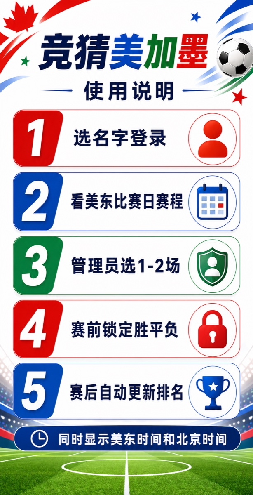

竞猜美加墨发布上线图文说明
目标：把本地网页应用发布到公网，让 7 位朋友用手机浏览器登录、竞猜、查看排名，并由梁东旭管理每日竞猜场次和赛果兜底。

前端发布使用 Vercel，把网页发布成公网地址。
数据同步使用 Supabase 保存账号、赛程、竞猜、排名和实时更新。
赛程基准比赛日和赛程以 FIFA 官方 Scores & Fixtures 页面为准。
一、上线后的使用流程
1
朋友打开网址，选择自己的名字并输入口令。
朋友打开网址，选择自己的名字并输入口令。
2
首页显示当前美东比赛日完整赛程，同时显示北京时间。
首页显示当前美东比赛日完整赛程，同时显示北京时间。
3
梁东旭在第一场开赛前选择 1 到 2 场竞猜比赛。
梁东旭在第一场开赛前选择 1 到 2 场竞猜比赛。
4
每个人赛前选择胜、平、负；锁定后不能修改。
每个人赛前选择胜、平、负；锁定后不能修改。
5
比赛结束后更新赛果，排名自动重新计算。
比赛结束后更新赛果，排名自动重新计算。
二、你需要准备什么
| 项目 | 用途 | 建议 |
|---|---|---|
| Supabase 账号 | 数据库、登录、实时同步 | 先用免费项目即可。 |
| Vercel 账号 | 发布网页 | 建议用 GitHub 登录，部署最省事。 |
| GitHub 仓库 | 存放代码并连接 Vercel | 私有仓库也可以。 |
| Dai Dai 音频 | 背景音乐 | 放到 public/audio/dai-dai.m4a。 |
| 锁定音效 | 竞猜锁定提示音 | 放到 public/audio/lock.mp3。 |
| 赛程数据 | 初始化 104 场比赛 | 以 FIFA 官方页面核对后导入 Supabase。 |
三、创建 Supabase 后端
- 打开 supabase.com，创建一个新项目。
- 进入项目后，打开左侧 SQL Editor。
- 复制项目里的
supabase/migrations/001_initial_schema.sql全部内容，粘贴并运行。 - 确认数据库里出现这些表：
profiles、matches、picks、featured_matches、result_overrides。 - 确认 Realtime 已包含
matches、picks、featured_matches，这样朋友提交竞猜和球队名更新会实时刷新。
管理员权限：梁东旭的
profiles.is_admin 必须设置为 true。只有管理员能选择每日竞猜场次、更新淘汰赛待定球队、手动修正赛果。
四、创建 7 个登录账号
在 Supabase 左侧打开 Authentication → Users，为 7 位朋友分别创建用户。建议使用下面这些邮箱格式，口令由你私下发给每个人。
| 显示名 | 登录邮箱 | 管理员 |
|---|---|---|
| 王森 | wang-sen@jingcai.local | 否 |
| 杨宇恒 | yang-yuheng@jingcai.local | 否 |
| 于洋 | yu-yang@jingcai.local | 否 |
| 王晓明 | wang-xiaoming@jingcai.local | 否 |
| 毕艺馨 | bi-yixin@jingcai.local | 否 |
| 赵文宣 | zhao-wenxuan@jingcai.local | 否 |
| 梁东旭 | liang-dongxu@jingcai.local | 是 |
创建 Auth 用户后，把每个用户的 UUID 插入 profiles。示例：
insert into public.profiles (id, display_name, is_admin)
values
('这里填王森的Auth UUID', '王森', false),
('这里填梁东旭的Auth UUID', '梁东旭', true);五、导入赛程和配置同步
- 打开 FIFA 官方赛程页面：Scores & Fixtures。
- 把 104 场比赛按官方页面核对后导入
matches。 - 比赛日按美东时间组织；开球时间建议保存成带时区的 ISO 时间，例如
2026-06-11T15:00:00-04:00。 - 淘汰赛球队暂未确定时，可以先写
待定 1A、待定 2B这类名称。 - 球队确定后，自动同步应更新
home_team和away_team；如果同步慢，梁东旭可在页面手动点“更新球队”。
重要：第三方数据源只能作为辅助，不能覆盖 FIFA 官方赛程。比赛日期、开球时间、场地、对阵以 FIFA 页面为准。
六、配置 Vercel 发布网页
- 把项目上传到 GitHub 仓库。
- 打开 vercel.com，选择 Add New Project。
- 选择这个 GitHub 仓库。
- Framework Preset 选择 Vite。
- Build Command 使用
npm run build。 - Output Directory 使用
dist。 - 添加下面这些环境变量后点击 Deploy。
| 环境变量 | 值 |
|---|---|
VITE_SUPABASE_URL | Supabase Project URL |
VITE_SUPABASE_ANON_KEY | Supabase anon public key |
VITE_DEMO_MODE | false |
VITE_APP_TZ | Asia/Shanghai |
七、放入音乐和音效
- 把你合法可用的 Dai Dai 音频放到
public/audio/dai-dai.m4a。 - 把锁定音效放到
public/audio/lock.mp3。 - 重新部署 Vercel。
- 手机浏览器一般不允许自动播放，所以用户需要点右上角音乐按钮开启。
八、上线前验收清单
- 7 个账号都能登录。
- 梁东旭显示为管理员。
- 首页显示当前美东比赛日。
- 赛程同时显示美东时间和北京时间。
- 管理员能选择 1 到 2 场竞猜比赛。
- 普通用户不能选择竞猜场次。
- 每人同一场只能锁定一次。
- 锁定后不能修改。
- 排名能根据赛果变化。
- 淘汰赛待定球队能被更新。
- FIFA 官方赛程链接能打开。
- iPhone Safari 和 Android Chrome 都能正常访问。
九、比赛日运维方式
- 每天第一场比赛开始前，梁东旭打开应用。
- 查看当前美东比赛日完整赛程。
- 选择 1 到 2 场作为竞猜比赛。
- 通知朋友们在单场开赛前完成选择。
- 比赛结束后确认赛果同步。如果没有同步，管理员手动修正赛果。
- 淘汰赛阶段如果出现“待定”，在 FIFA 确认对阵后立刻更新球队名。